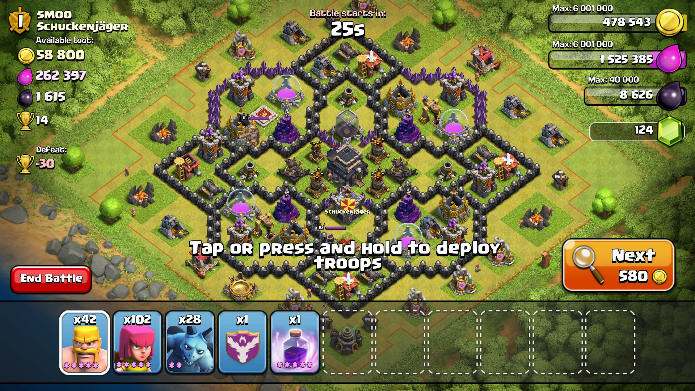
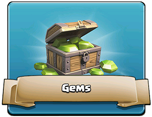
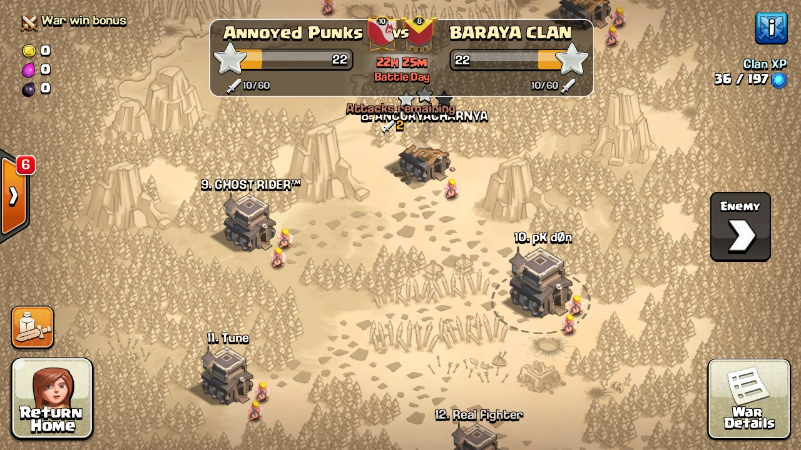

Clash of Clans is an online multiplayer game in which players build a community (in the form of a clan), train troops, and attack other players to earn gold, elixir and Dark Elixir. Gold and elixir can be used to build defenses that protect the player from other players attacks. Elixir and dark elixir is also used to train and upgrade troops and spells. The game also features a pseudo-single player campaign in which the player can attack a series of fortified goblin villages and earn gold and elixir. The game has 2 'builders' by default but one can install more builders (maximum 5) using gems, builders are important for upgrading any building. If all builders are busy one has to either wait (if the player wants to upgrade a building) for them to be free or free them up using gems
Buildings
To earn and store gold and elixir, players must build gold mines and gold storages and elixir collectors and elixir storages, respectively. Elixir is used to train new troops, carry out research in the laboratory to upgrade troops, to re-load X-Bows (available from Town Hall 9) and to build and upgrade certain buildings, mostly pertaining to buildings used in attacking another player's base. Gold is used to build defensive buildings and to upgrade the town hall, which allows access to more buildings and higher levels for existing buildings. At higher levels, dark elixir becomes available; this type of elixir is used to train and upgrade dark elixir troops and heroes, create dark spells, and fuel the Inferno Tower, a defensive building that is available only at Town Hall 10. The Eagle Artillery which is a defensive building that is only available at Town Hall 11, is fueled by elixir. Town Hall 11 also provides access to a new hero - The Grand Warden. It is the only hero born out of elixir. To earn and store dark elixir, players must build dark elixir drills and dark elixir storages. [4]
There are a number of buildings available to the player to defend their village, including cannons, mortars, bombs, teslas, traps, archer towers, wizard towers, inferno towers and eagle artilleries. Players can also build walls, which can be upgraded, as a players town hall level increases.
Troops and spells
The game has two kinds of barracks (barracks and dark barracks) and two kinds of spell factories (spell factory and dark spell factory). The barracks create troops using elixir whereas dark barracks create troops using dark elixir.
The spell factories follow the same pattern, normal spell factory creates spells using elixir and dark factory using dark elixir. All troops and spells have different properties. As the player progresses, several new troops and spells get unlocked.
Gems

Aside from the game's resources (gold, elixir and dark elixir), the game also uses gems as a currency . Gems may be used primarily to finish the time that certain processes take, such us the remaining time of a building's or a troop's upgrade, or to instantly train an army. Additionally, they can be used to "boost" certain buildings, such as resource productions and barracks. Gems may be acquired through in-app purchases, they may be awarded for reaching certain milestones or completing achievements or they can be earned from clearing obstacles, such as trees, mushrooms or gem boxes, which spawn randomly on a player's base.
Clan wars

Clans are groups of players who join together to support each other, either materially (donating troops) or verbally (giving advice). Players can join clans once they rebuild the special Clan Castle building early on. A major component of the gameplay of Clash of Clans is clans facing off against one another. Clan leaders and co-leaders can begin wars against other clans. Each clan is then given one "preparation day" and one "war day." When a player attacks a member of the opposing clan, they receive stars based upon the amount of destruction they cause to the opponent's community. Each player is limited to two attacks per war, and the team with the most stars at the end of the war day is declared victorious. If the two clans' amount of stars are equal, then the victorious clan is the one that has a greater percent destruction. Players receive bonus war loot if he/she use their attacks in the war. This loot is different on different bases and is decided by
Supercell , the top most base has the most war bonus loot and the last base has the least amount of bonus loot. If the clan wins the war, the bonus loot is fully delivered to the player but during a loss one-third of the loot is delivered to the player. [11] In the May 2016 update, Friendly Challenges were introduced to allow clanmates to compete amongst other clanmates, however these challenges do not provide loot or trophies and does not affect a player's army.
Development and release
Clash of Clans was developed by Supercell , the company behind other popular mobile games like Hay Day . The game was released for iOS platforms on August 2, 2012, and on Google Play for Android on October 7, 2013.
Marketing
In February 2015, Supercell released their Clash of Clans Super Bowl XLIX commercial, featuring Liam Neeson parodying his character from Taken .[14] On February 2, Business Insider reported the ad as the 5th most watched Super Bowl ad,[15] though on February 6, VentureBeat reported the ad was the most viewed of those that appeared on the Super Bowl. [16] YouTube users later voted the advertisement the second best Super Bowl ad, behind Nissan's "With Dad" ad. [17]
On September 23, 2015, Taiwanese singers JJ Lin and Jimmy Lin released the game's theme song ("Start a war totally" in English) which was sung in Mandarin.
Critical reception
Clash of Clans has received generally positive reviews. The iOS version holds an aggregate score of 74 out of 100 on Metacritic, [20] and 80% on GameRankings . [19]
Gamezebo 's Leif Johnson was impressed, scoring the game 4.5 out of 5. Although he felt the gameplay was heavily skewed to encourage the player to purchase gems, he praised the addition of a single-player campaign. He concluded that " Clash of Clans is a simple game, but that's more of a strength than a weakness. It's simple enough to provide quick, painless matches on an iPhone in an idle moment, and there are enough different units to choose from in the battle mode to make playing against other players endlessly rewarding. Best of all, the option to fight against NPC goblins gives Clash of Clans a small edge over similar strategy games that rely almost entirely on player-versus-player combat." [21]
Pocket Gamer's Peter Willington was equally impressed, scoring the game 9 out of 10 and giving it a "Gold Award". Reviewing the game several months after it was released for iOS devices, Willington praised the game for requiring real strategy to play. He wrote that the gameplay was built on the progression of "requiring more and more sophisticated units, asking you to strategise and really think about which elements you should focus on building within your camp." He concluded that " Clash of Clans is a superb game, freemium or otherwise, with more nuance than most give it credit for. That's why it's passed the test of time since its launch and still has an active community devotedly constructing elaborate fortresses in the hope of becoming invincible." [4]
148App's Rob Rich scored the game 3.5 out of 5, writing "It's great to play an online freemium game that doesn't shy away from the single-player experience but also offers up some honest-to-goodness direct interaction, which is a very rare combination these days. It probably won't warm the hearts of any haters out there, but it does give genre fans something with a bit more action and strategy than they might be used to." [5]
Modojo's John Bedford was less impressed, scoring the game 3 out of 5. He was critical of freemium gaming in general, writing "The novelty hasn't just worn off this particular style of greedy gaming, it's shriveled up and condensed itself into an infinitely dense singularity of self-loathing." Of the game itself, he concluded "This is a game that follows in the footsteps of no small number of titles that have made feverish demands on our wallets in exchange for just a slightly thicker slice of the gameplay. It's possible you have an unending appetite for these micromanagement titles, in which case we recommend getting heartily stuck into Supercell's latest game. While Clash of Clans brings something new to accompany its competent but unexceptional empire gameplay, for most of us it'll be a case of too little, too late
Commercial reception
Clash of Clans became an App Store top 5 download between December 2012 and May 2013, [23] and this success has been described as helping to usher in a new era in single player gaming on mobile devices. [24][25] In 2013, Clash of Clans was the third-highest game in revenue generated on the App Store and number one on Google Play. [26] In 2015, the game was the top grossing app on both the App Store and Google Play, with an estimated revenue of 1.5 million dollars per day.
.jpg) Clash of Clans has received generally positive reviews. The iOS version holds an aggregate score of 74 out of 100 on Metacritic, [20] and 80% on GameRankings . [19]
Gamezebo 's Leif Johnson was impressed, scoring the game 4.5 out of 5. Although he felt the gameplay was heavily skewed to encourage the player to purchase gems, he praised the addition of a single-player campaign. He concluded that " Clash of Clans is a simple game, but that's more of a strength than a weakness. It's simple enough to provide quick, painless matches on an iPhone in an idle moment, and there are enough different units to choose from in the battle mode to make playing against other players endlessly rewarding. Best of all, the option to fight against NPC goblins gives Clash of Clans a small edge over similar strategy games that rely almost entirely on player-versus-player combat." [21]
Pocket Gamer's Peter Willington was equally impressed, scoring the game 9 out of 10 and giving it a "Gold Award". Reviewing the game several months after it was released for iOS devices, Willington praised the game for requiring real strategy to play. He wrote that the gameplay was built on the progression of "requiring more and more sophisticated units, asking you to strategise and really think about which elements you should focus on building within your camp." He concluded that " Clash of Clans is a superb game, freemium or otherwise, with more nuance than most give it credit for. That's why it's passed the test of time since its launch and still has an active community devotedly constructing elaborate fortresses in the hope of becoming invincible." [4]
148App's Rob Rich scored the game 3.5 out of 5, writing "It's great to play an online freemium game that doesn't shy away from the single-player experience but also offers up some honest-to-goodness direct interaction, which is a very rare combination these days. It probably won't warm the hearts of any haters out there, but it does give genre fans something with a bit more action and strategy than they might be used to." [5]
Modojo's John Bedford was less impressed, scoring the game 3 out of 5. He was critical of freemium gaming in general, writing "The novelty hasn't just worn off this particular style of greedy gaming, it's shriveled up and condensed itself into an infinitely dense singularity of self-loathing." Of the game itself, he concluded "This is a game that follows in the footsteps of no small number of titles that have made feverish demands on our wallets in exchange for just a slightly thicker slice of the gameplay. It's possible you have an unending appetite for these micromanagement titles, in which case we recommend getting heartily stuck into Supercell's latest game. While Clash of Clans brings something new to accompany its competent but unexceptional empire gameplay, for most of us it'll be a case of too little, too late
Clash of Clans has received generally positive reviews. The iOS version holds an aggregate score of 74 out of 100 on Metacritic, [20] and 80% on GameRankings . [19]
Gamezebo 's Leif Johnson was impressed, scoring the game 4.5 out of 5. Although he felt the gameplay was heavily skewed to encourage the player to purchase gems, he praised the addition of a single-player campaign. He concluded that " Clash of Clans is a simple game, but that's more of a strength than a weakness. It's simple enough to provide quick, painless matches on an iPhone in an idle moment, and there are enough different units to choose from in the battle mode to make playing against other players endlessly rewarding. Best of all, the option to fight against NPC goblins gives Clash of Clans a small edge over similar strategy games that rely almost entirely on player-versus-player combat." [21]
Pocket Gamer's Peter Willington was equally impressed, scoring the game 9 out of 10 and giving it a "Gold Award". Reviewing the game several months after it was released for iOS devices, Willington praised the game for requiring real strategy to play. He wrote that the gameplay was built on the progression of "requiring more and more sophisticated units, asking you to strategise and really think about which elements you should focus on building within your camp." He concluded that " Clash of Clans is a superb game, freemium or otherwise, with more nuance than most give it credit for. That's why it's passed the test of time since its launch and still has an active community devotedly constructing elaborate fortresses in the hope of becoming invincible." [4]
148App's Rob Rich scored the game 3.5 out of 5, writing "It's great to play an online freemium game that doesn't shy away from the single-player experience but also offers up some honest-to-goodness direct interaction, which is a very rare combination these days. It probably won't warm the hearts of any haters out there, but it does give genre fans something with a bit more action and strategy than they might be used to." [5]
Modojo's John Bedford was less impressed, scoring the game 3 out of 5. He was critical of freemium gaming in general, writing "The novelty hasn't just worn off this particular style of greedy gaming, it's shriveled up and condensed itself into an infinitely dense singularity of self-loathing." Of the game itself, he concluded "This is a game that follows in the footsteps of no small number of titles that have made feverish demands on our wallets in exchange for just a slightly thicker slice of the gameplay. It's possible you have an unending appetite for these micromanagement titles, in which case we recommend getting heartily stuck into Supercell's latest game. While Clash of Clans brings something new to accompany its competent but unexceptional empire gameplay, for most of us it'll be a case of too little, too late